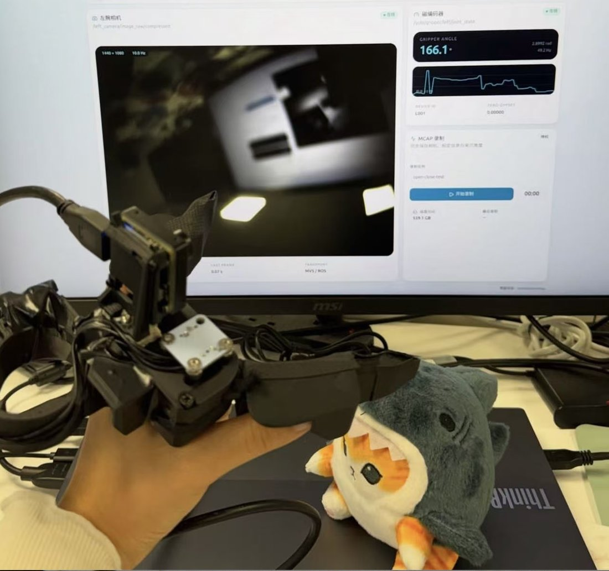

UMI hardware and audio-augmented VLA
Latencore, Cambridge, 2026
Built a Universal Manipulation Interface (UMI) rig end to end, from soldering and 3D printing to assembly and debugging, with magnetic encoders, industrial cameras and VR tracking, and used it to collect demonstrations. Introduced an audio modality, checking its validity and interpretability, then built the multimodal fusion framework and trained the models, evaluated on a real robot.
Hardware build, data collection, multimodal fusion, VLA training